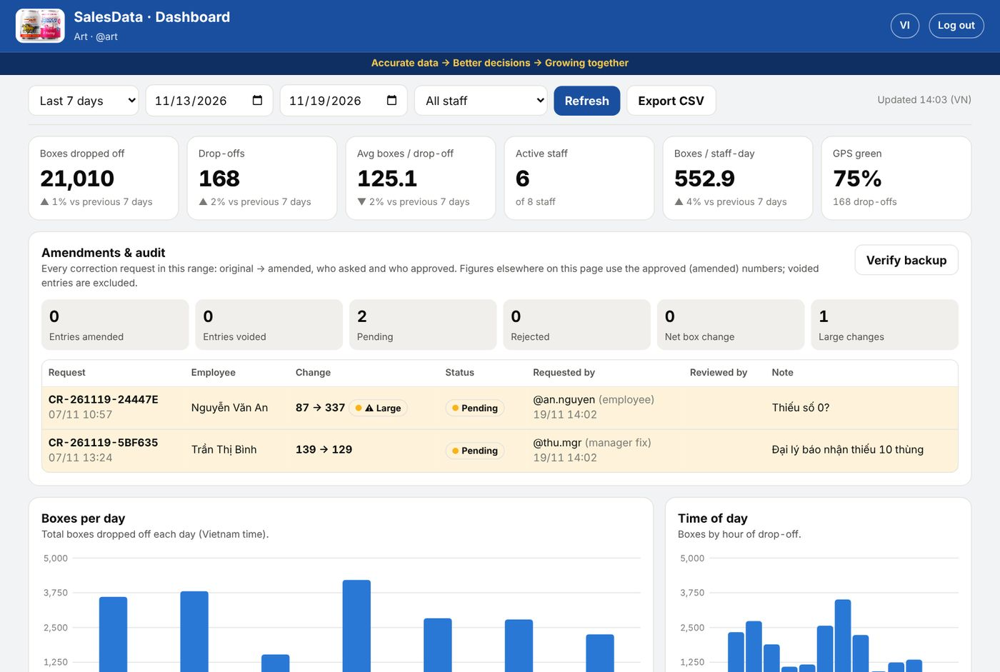

Báo cáo, người dùng và kiểm toánReporting, users and audit
Admin là chủ sở hữu quy trình: quản lý người dùng, xem toàn bộ báo cáo, theo dõi mọi sửa đổi và kiểm tra bản sao lưu. The admin is the process owner: you manage users, see all reporting, follow every amendment and verify the backup.
1Vai trò và quyềnRoles and access
| Vai trò (cột Role)Role (Role column) | TrangPage | Được làmCan do |
|---|---|---|
| (trống) Nhân viên bán hàng(blank) Sales staff | index.html | Ghi nhận giao hàng, xem doanh số của mình, báo lỗi. Không sửa được gì.Record drop-offs, view own sales, report mistakes. Cannot edit anything. |
manager Quản lý dữ liệuData manager | manager.html | Duyệt/từ chối, tra cứu, sửa trực tiếp (cần người thứ hai duyệt), lịch sử.Approve/reject, search, direct fixes (need a second approver), history. |
admin | dashboard.html + manager.html | Mọi thứ ở trên, cộng báo cáo, mục Sửa đổi & kiểm toán, Kiểm tra bản sao lưu.Everything above, plus the dashboard, Amendments & audit, and Verify backup. |
Không ai được duyệt yêu cầu của chính mình — kể cả admin. Bảng điều khiển (dashboard) chỉ để xem: nó không thể thay đổi dữ liệu.Nobody can approve their own request, including the admin. The dashboard is view-only; it cannot change data.
2Quản lý người dùngManaging users
Mọi người dùng nằm trong tab Users của Google Sheet chính. Thay đổi có hiệu lực ngay — không cần triển khai lại.All users live in the Users tab of the main Google Sheet. Changes take effect immediately; no redeploy needed.
| Username | PIN | Employee Name | Active | Role | |
|---|---|---|---|---|---|
| an.nguyen | 4252 | Nguyễn Văn An | ☑ | ||
| thu.mgr | 6223 | Ngô Thị Thu | ☑ | manager | thu@… |
| art | … | Art | ☑ | admin |
| Việc cần làmTask | Cách làmHow |
|---|---|
| Thêm nhân viênAdd someone | Thêm một dòng. Username viết thường, không dấu, không khoảng trắng. PIN 4 số, duy nhất, tránh 1234/0000/năm sinh.Add a row. Username lowercase, no accents or spaces. PIN 4 digits, unique; avoid 1234, 0000 and birth years. |
| Đặt lại PINReset a PIN | Sửa ô PIN. Gửi mã mới riêng cho người đó.Change the PIN cell. Send the new PIN to that person privately. |
| Khóa tài khoảnBlock someone | Bỏ tick Active — bị chặn ngay lập tức, kể cả phiên đang mở. Dữ liệu cũ vẫn giữ nguyên.Untick Active. They're blocked immediately, even mid-session. Their past data stays. |
| Quản lý dữ liệuData managers | Role = manager, và điền Email để nhận email nhắc buổi sáng.Role = manager, and fill in Email so they get the morning reminder. |
Chỉ mình admin được có quyền truy cập Google Sheet chính. Kiểm tra nút Chia sẻ định kỳ.Only the admin should have access to the main Google Sheet. Check the Share button from time to time.
3Bảng điều khiển (dashboard)The dashboard
Mở dashboard.html và đăng nhập bằng tài khoản admin. Chọn khoảng thời gian và nhân viên ở thanh lọc trên cùng. Trang tự làm mới mỗi 5 phút. Open dashboard.html and log in with your admin account. Pick the date range and employee in the filter bar at the top. The page refreshes every 5 minutes.

| MụcSection | Cho biếtTells you |
|---|---|
| Ô chỉ sốKPI tiles | Tổng thùng, số lượt, TB/lượt, nhân viên hoạt động, thùng/người/ngày, % GPS xanh — so với kỳ trước cùng độ dài.Boxes, drop-offs, avg per drop-off, active staff, boxes per staff-day, GPS green %, compared with the previous period of the same length. |
| Sửa đổi & kiểm toánAmendments & audit | Mọi yêu cầu sửa (xem mục 4).Every correction (see section 4). |
| Thùng theo ngày · Giờ trong ngàyBoxes per day · Time of day | Xu hướng và giờ giao hàng.Trend and delivery hours. |
| Bản đồ nhiệtHeat map | Nhân viên × ngày. Ô trống = không giao. Chạm một ô để mở ngày đó trên dòng thời gian.Employee × date. Blank cells = no deliveries. Tap a cell to open that day in the timeline. |
| Dòng thời gianDaily timeline | Mỗi chấm là một lượt (to = nhiều thùng); đường kẻ = lượt đầu đến lượt cuối. Chấm viền cam = đã sửa/đang chờ.Each dot is a drop-off (bigger = more boxes); the line runs first to last. Orange-ringed dots = amended or pending. |
| Bản đồMap | Mọi điểm giao trong khoảng thời gian.Every drop-off location in the range. |
| Hiệu suất nhân viênEmployee performance | Bảng sắp xếp được theo mọi cột.Table you can sort by any column. |
| Kiểm tra dữ liệuData checks | Có thể trùng (cùng người, <15 phút, <100 m), trên 500 thùng, GPS cam, gửi sau.Possible duplicates (same person, <15 min, <100 m), over 500 boxes, GPS orange, sent later. |
| Xuất CSVExport CSV | Tải dữ liệu đã lọc cho Excel, gồm số gốc, số đã duyệt và trạng thái.Downloads the filtered data for Excel, with original boxes, approved boxes and status. |


Mọi số liệu dùng số đã duyệt; mục đã hủy không được tính. Vì vậy tổng trên báo cáo có thể khác tổng cột Boxes trong tab Dropoffs — đó là đúng.All figures use the approved numbers, and voided entries are excluded. So dashboard totals can differ from summing the Boxes column in the Dropoffs tab, and that's expected.
4Sửa đổi & kiểm toánAmendments & audit
Ngay dưới các ô chỉ số. Mỗi dòng là một yêu cầu: gốc → sau sửa, người yêu cầu, người duyệt, thời gian, ghi chú. Dòng tô vàng = đang chờ hoặc thay đổi lớn. Right under the KPI tiles. Each row is one request: original → amended, who asked, who reviewed, when, and the notes. Highlighted rows = pending or large changes.

| Mục đã sửa / đã hủyEntries amended / voided | Số yêu cầu đã duyệt theo loại.Approved requests by type. |
| Chờ duyệt / Từ chốiPending / Rejected | Hàng chờ còn lại và các yêu cầu bị từ chối.What's still waiting, and what was turned down. |
| Chênh lệch thùngNet box change | Tổng tác động của các sửa đổi đã duyệt lên doanh số.The total effect of approved corrections on sales. |
| Thay đổi lớnLarge changes | Yêu cầu từ 200 thùng trở lên — nên xem lại.Requests of 200 boxes or more, worth a look. |
5Bản sao lưu và kiểm traThe backup and Verify backup
Mỗi lượt giao và mỗi sự kiện sửa được ghi đồng thời vào một Google Sheet sao lưu riêng trong Drive của bạn ("SalesData BACKUP — admin only"). Không chia sẻ file này. Mỗi dòng có một "dấu vân tay" (hash) liên kết với dòng trước — nếu ai sửa hoặc xóa một dòng, chuỗi bị đứt. Every drop-off and every correction event is also written to a separate backup Google Sheet in your Drive ("SalesData BACKUP — admin only"). Never share it. Each row carries a fingerprint (hash) linked to the row before, so if anyone edits or deletes a row, the chain breaks.
Kiểm tra bản sao lưuVerify backup
Bấm Kiểm tra bản sao lưu trong mục Sửa đổi & kiểm toán. Kết quả xanh ✓ = mọi thứ khớp.Tap Verify backup in Amendments & audit. A green ✓ means everything matches.
| Kết quảResult | Nghĩa làMeans | Nên làmWhat to do |
|---|---|---|
| Sheet chính bị sửaMain sheet edited | Ai đó sửa trực tiếp tab Dropoffs.Someone typed directly into the Dropoffs tab. | Sheet chính → Tệp → Lịch sử phiên bản để xem ai/khi nào; khôi phục giá trị gốc từ bản sao lưu.Main Sheet → File → Version history to see who and when; restore the original value from the backup. |
| Bị xóa khỏi sheet chínhDeleted from main sheet | Một dòng gốc đã bị xóa.An original row was deleted. | Như trên; chép lại dòng từ bản sao lưu.As above; copy the row back from the backup. |
| Dòng sao lưu bị thay đổiBackup row altered | Bản sao lưu đã bị sửa.The backup itself was edited. | Mở bản sao lưu → Lịch sử phiên bản. Chỉ bạn có quyền, nên thường là sửa nhầm.Open the backup → Version history. Only you have access, so it's usually an accidental edit. |
| Chưa có trong sao lưuNot yet in backup | Ghi sao lưu bị lỗi tạm thời.A backup write failed temporarily. | Việc chạy tự động lúc 7:00 sẽ tự bổ sung. Nếu vẫn còn, chạy setup trong Apps Script.The 07:00 job fills it automatically. If it persists, run setup in Apps Script. |
Việc tự động mỗi sáng 7:00Automatic jobs at 07:00 every day
- Bổ sung dòng thiếu vào bản sao lưu, kiểm tra lại chuỗi hash và so khớp với sheet chính. Chỉ email cho bạn nếu có vấn đề.Fills any gaps in the backup, re-checks the hash chains and compares with the main sheet. Emails you only if something is wrong.
- Nếu có yêu cầu chờ duyệt, gửi một email cho cả hai quản lý dữ liệu.If requests are waiting, sends one email to both data managers.
Tìm link bản sao lưu: Apps Script → Executions → lần chạy setup → nhật ký. Hoặc tìm "SalesData BACKUP" trong Google Drive.To find the backup link: Apps Script → Executions → the setup run → log. Or search Google Drive for "SalesData BACKUP".
6Các tab trong Google SheetWhat's in the Google Sheets
| Sheet | Tab | Nội dungContents |
|---|---|---|
| ChínhMain | Dropoffs | Nhật ký gốc. Không bao giờ sửa.Original log. Never edit. |
| Corrections | Mọi yêu cầu sửa và kết quả duyệt.Every correction request and its outcome. | |
| Audit | Mọi lần đăng nhập, yêu cầu, duyệt, từ chối, kiểm tra sao lưu.Every login, request, approval, rejection and backup check. | |
| Users | Danh sách người dùng (bạn quản lý).The user list (you maintain it). | |
| Sessions | Phiên đăng nhập (ẩn, tự động).Logins (hidden, automatic). | |
| Sao lưuBackup | Dropoffs_Original | Bản sao từng lượt giao, có hash.Copy of every drop-off, hash-chained. |
| Corrections_Events | Mọi sự kiện yêu cầu/duyệt/từ chối/hủy, có hash.Every request/approve/reject/cancel event, hash-chained. |
7Bảo trìMaintenance
| Đổi mã backend (Code.gs)Backend change (Code.gs) | Deploy → Manage deployments → ✏️ → Version: New version → Deploy. URL giữ nguyên.Deploy → Manage deployments → ✏️ → Version: New version → Deploy. The URL stays the same. |
| Đổi trang ứng dụngApp page change | Tải file mới lên GitHub. Nhân viên nhận bản mới lần mở tiếp theo có mạng.Upload the new file to GitHub. Staff get it the next time they open the app with signal. |
| Dọn phiên cũOld logins | Tùy chọn: chạy cleanupSessions mỗi tháng.Optional: run cleanupSessions monthly. |
| Đổi quy tắcChange a rule | Ở đầu Code.gs: MAX_BOXES (2.400), LARGE_CHANGE (200), GRACE_DAYS (3). Sau khi sửa phải triển khai phiên bản mới.At the top of Code.gs: MAX_BOXES (2,400), LARGE_CHANGE (200), GRACE_DAYS (3). Deploy a new version afterwards. |
| Không bao giờ đưa lên GitHubNever put on GitHub | Code.gs và danh sách PIN.Code.gs and the PIN list. |